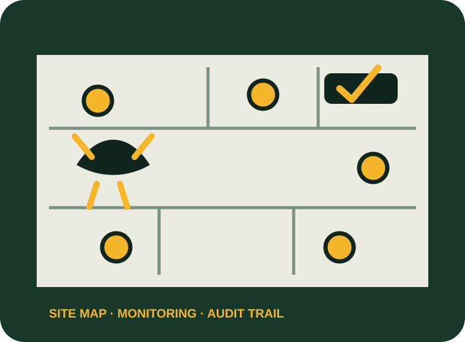

Commercial pest contracts
Verified capability presented with a clear route into the right enquiry workflow.
A contract-led website concept for commercial sites, multi-location estates and urgent call-outs, without losing the fast domestic route.

Only services supported by the business’s public information are used in this concept.
Verified capability presented with a clear route into the right enquiry workflow.
Verified capability presented with a clear route into the right enquiry workflow.
Verified capability presented with a clear route into the right enquiry workflow.
Verified capability presented with a clear route into the right enquiry workflow.
The current site confirms nationwide commercial contract coverage and several hygiene services, but the main quote form remains general. It does not visibly separate urgent infestations from planned contracts or capture site type, estate size, audit standards, current provider, reporting needs or visit frequency.
A commercial-first enquiry system with emergency and contract routes, multi-site qualification, CRM lead routing, automated acknowledgements, service reminders and location/sector SEO pages.
The form separates urgent activity from a structured commercial contract enquiry.